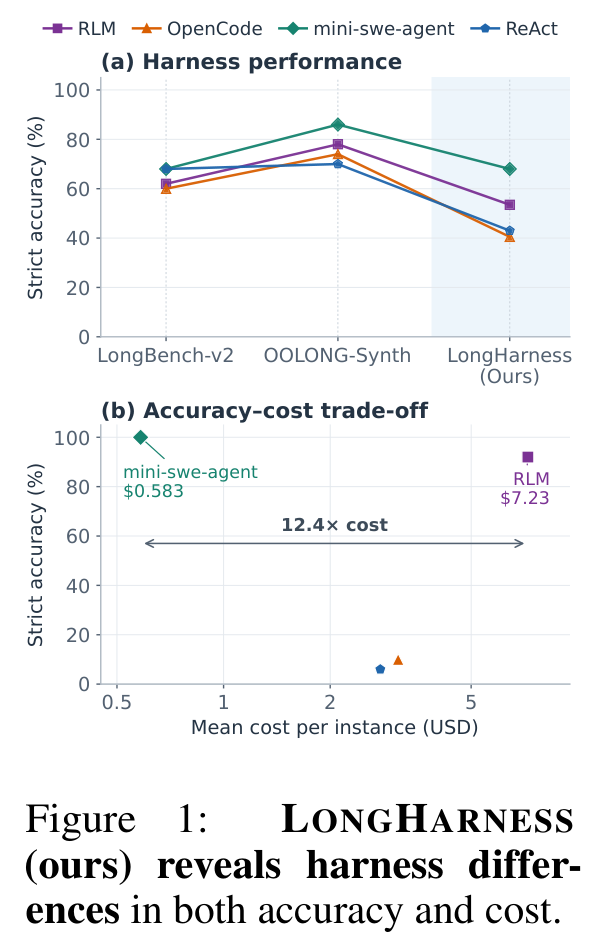
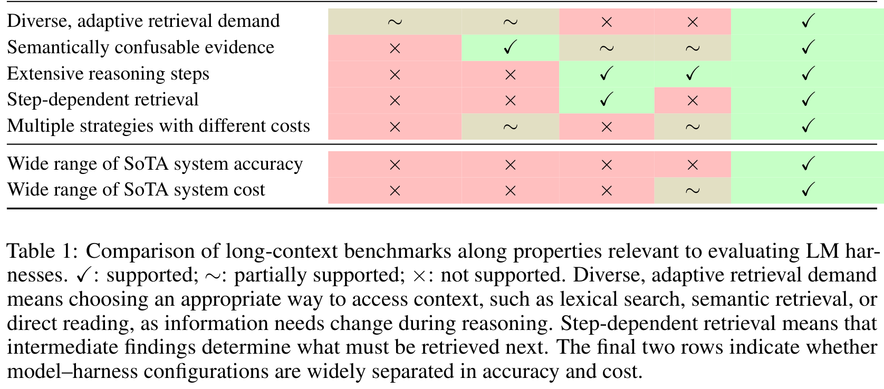
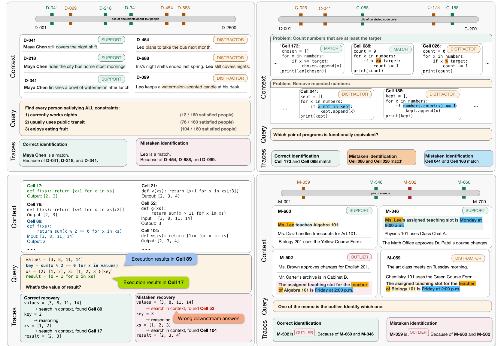
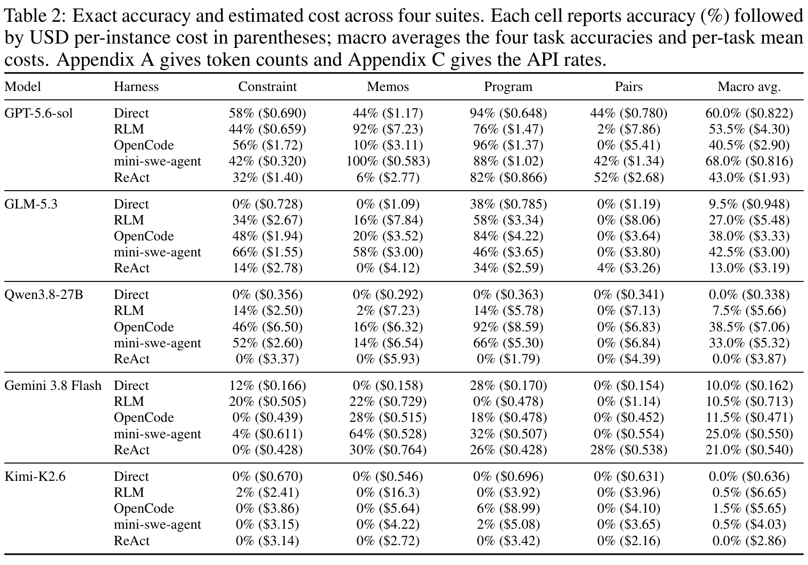
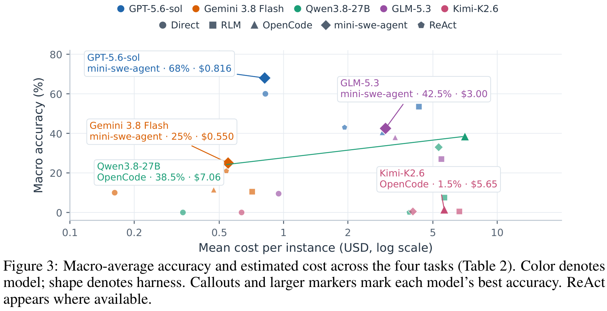
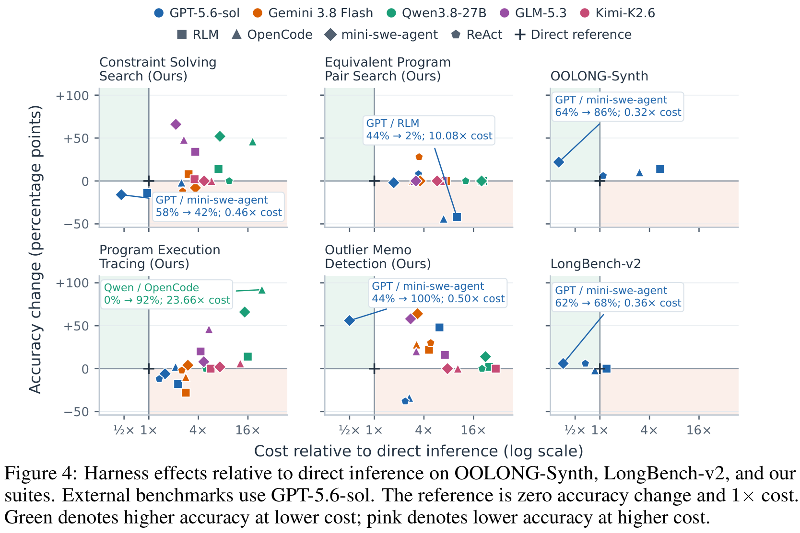
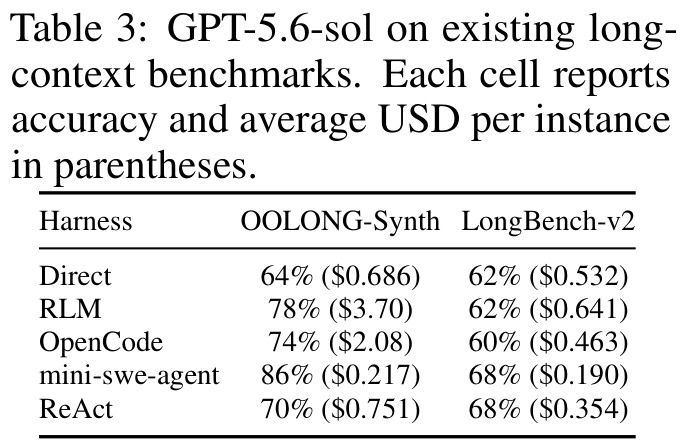
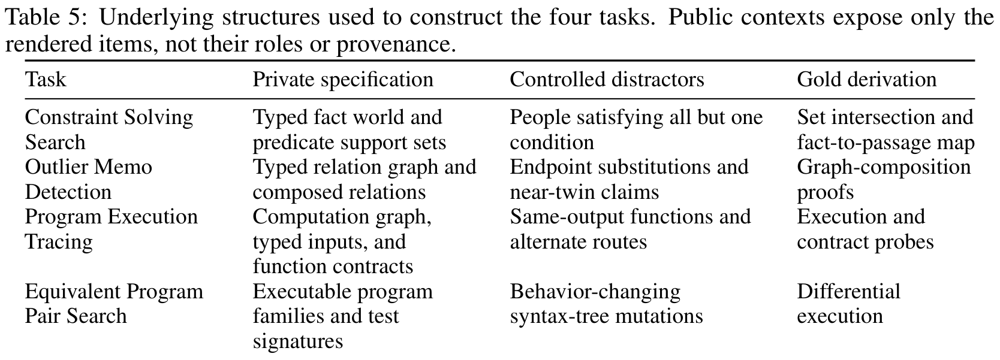
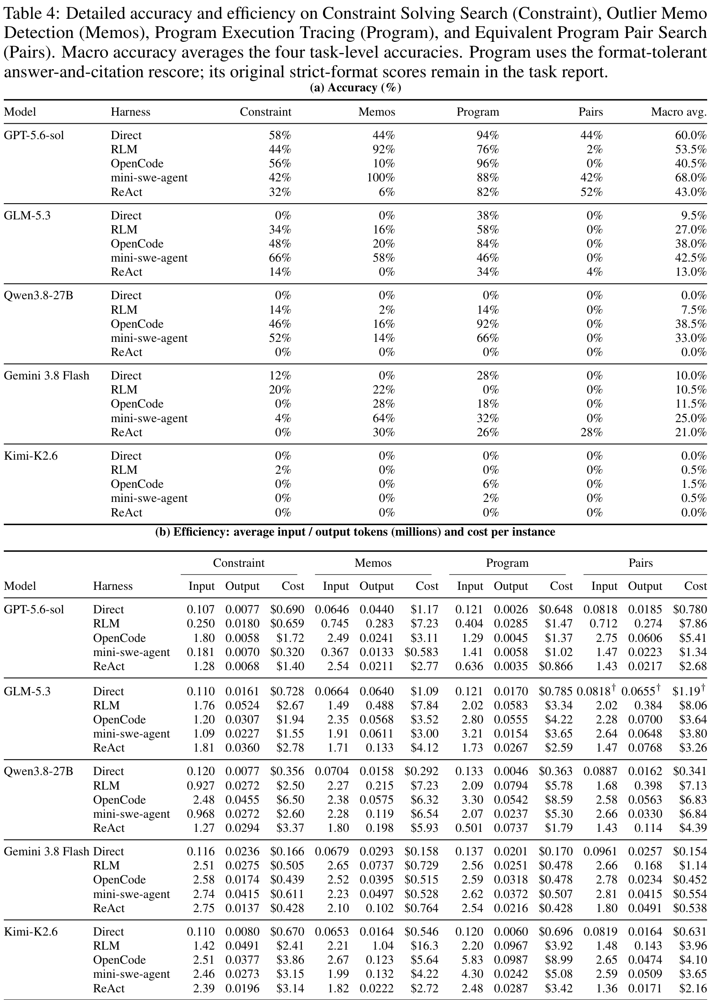
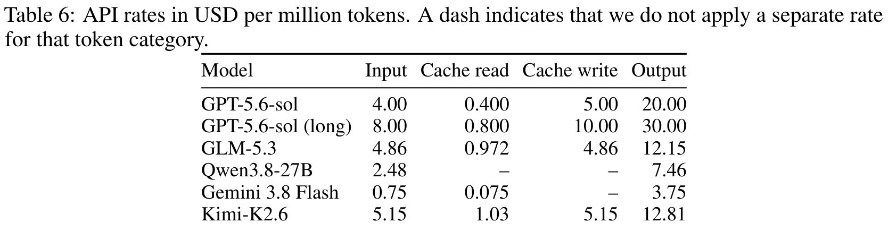

阅读导航(图文按讲述顺序穿插)
速览:这篇文章在争什么 背景:harness 是什么,旧评测漏了什么 四个任务:一张图看完设计意图 逐个任务拆解:难点与省算力的走法 主结果:68% 的天花板与 12.4 倍成本差 机制归因:四种 harness 为什么会赢会输 横向对比:旧基准为什么分不出来 构造方法与成本口径(附录) 术语速查(阅读中随时回看) 点评:贡献、局限与值得补测的点
01 · Overview
速览:这篇文章在争什么
先给结论:这篇论文不是提出一个新的 harness,而是提出一套用来评测 harness 的基准 。它的核心主张是——长上下文系统应该以「模型 × harness」的组合为单位来评测,而且效率必须和准确率一起报 。
论文开门见山指出两个缺口。第一,现有长上下文任务的准确率已经饱和:不管是直推还是套上 agentic harness ,分数都挤在一小段区间里,分不出 harness 的能力差异。第二,只看准确率看不到成本:同一个底层模型,换一个 harness,花费可以差一个数量级——但准确率可能几乎一样,于是这种差异被完全掩盖。
Figure 1 就是这两点的浓缩。上面的子图把三个基准并排摆放:LongBench-v2 与 OOLONG-Synth 上,各 harness 的折线几乎贴合在一起;只有右侧阴影区的 LongHarness(本文)上,曲线才真正散开。下面的子图则换成"准确率 vs 成本"的散点:在 Outlier Memo Detection 这个任务上,RLM 与 mini-swe-agent 准确率接近,但成本相差 12.4 倍。

Figure 1: LongHarness (ours) reveals harness differences in both accuracy and cost.
中文解读:上半图(a)横轴是三个基准,纵轴是 strict accuracy;LongBench-v2 与 OOLONG-Synth 上四条 harness 曲线高度重叠(60–86%),而阴影区 LongHarness 上同一条 GPT-5.6-sol backbone 的曲线从 ~68% 一路散到 ~40%,说明本套件才有区分度。下半图(b)横轴换成每实例平均成本(对数刻度),纵轴仍是准确率:Outlier Memo Detection 上 mini-swe-agent 是 100% @ $0.583,RLM 是 92% @ $7.23,两者准确率只差 8 个点,成本却差 12.4 倍——这正是"只看准确率会漏掉"的部分。图例中颜色代表 harness(RLM 紫方块 / OpenCode 橙三角 / mini-swe-agent 绿菱形 / ReAct 蓝圆点)。
报告 p.1
💡 点击任意图片可查看原始高清大图,再次点击或按 Esc 关闭。
读数约定: 本页全部数字以论文原文为准;凡由本页依据论文配置整理、归纳或换算的内容,均以「整理 」「推算 」显式标注,便于与论文口径区分。记号沿用论文:\(A\) 为任务准确率(严格精确匹配),\(C\) 为每实例平均成本(USD),\(N\) 为实例数;宏观平均(macro average)指四个任务准确率的算术平均。成本口径为 API 费率换算,费率表见 Table 6。
这把文章要回答的问题拆成三问:
准确性 :当前最强的「模型 × harness」组合,能把这四个任务做到多高?效率 :达到相近准确率时,不同 harness 的计算代价差多少?可归因性 :harness 带来的增益(或损失)来自哪一步处理机制?
最佳宏观准确率
68.0%GPT-5.6-sol × mini-swe-agent(Table 2)
最强非 GPT 组合
42.5%GLM-5.3 × mini-swe-agent
单任务最好成绩区间
52% – 100%Pairs 52% 最难,Outlier 100% 最易
同任务同模型最大成本差
12.4×Outlier 上 RLM $7.23 vs mini-swe-agent $0.583
不随推理增长的答案
Kimi-K2.6 ≤ 1.5%5 个模型里唯一始终近零的
每实例预算
3M tokens累计输入 + 输出,跨多次模型调用
一句话小结: 论文的贡献是把"长上下文 harness 评测"从单一准确率轴,推进到「准确率 + 成本」的双轴,并且用量身设计的四个任务,把不同 harness 的失败模式逼到台面上——最终发现"没有万能 harness",额外的推理算力既非必要也非充分。
02 · Background & Motivation
背景:harness 是什么,旧评测漏了什么
2.1 先把「LM harness」定义清楚
论文给的定义是:harness 是包裹在基座模型外部的控制层,负责管理它的上下文、工具与交互序列 (Huang et al., 2026)。对长上下文推理而言,harness 让模型通过多轮交互来处理一个远超窗口的输入:用前面步骤的结果去指导后面的步骤。
论文使用的四类 harness 各有侧重,理解它们的"上下文访问方式"是理解全文的前提:
OpenCode mini-swe-agent RLM 可编程访问的对象 ,通过递归的子模型调用把它切成小块分别处理,再由主模型汇总;ReAct BAAI/bge-m3 (Chen et al., 2024)。
关键张力在于:这些机制能靠"更多的模型调用 + 反复查看上下文"提高准确率,但额外处理同时抬高成本。所以评估它们的价值,必须同时测准确率与消耗的算力 ——这句话是全文的动机句。
2.2 旧基准的两个结构性缺口
论文对现有长上下文基准做了分类批评,这一段的逻辑值得完整复述:
LongBench v2 / HELMET (Bai et al., 2025;Yen et al., 2025):覆盖面广,但任务以"召回少量相关信息 + 少数几步推理"为主。它们考的是证据找回,不怎么考"中间结论反复改变下一步该检索什么"的场景,因此对 harness 自适应检索策略的能力测试有限。LongProc (Ye et al., 2025):考长程序化生成,但把详细流程都给了模型,强调忠实执行,策略选择的成分被削弱。OOLONG-Synth (Bertsch et al., 2025):需要在大量信息上做聚合,但它允许一个普适的分治策略——逐条独立分类再汇总。这条路径不需要根据中间结论反复调整检索。
结论是:这两个方向都施加了可观的处理负担,但都缺少"困难检索与策略选择共同决定准确率和成本"的覆盖 。作者由此推出自己的设计目标:任务要让"多样、自适应的检索"与"长程推理"耦合,并且要允许多条成本不同的解法路径。
Table 1 把这套论证做成了可核对的属性矩阵。注意表被一条横线分成两段:上五行走是"任务维度"的属性,下两行走是"系统维度"的属性(即模型–harness 配置是否在准确率/成本上被拉开)。LongHarness 是唯一在七行里全部拿到 ✓ 的列。

Table 1: Comparison of long-context benchmarks along properties relevant to evaluating LM harnesses. ✓: supported; ∼: partially supported; ×: not supported.
中文解读:七行属性 × 五列基准。逐行看:① 多样自适应检索需求——LongBenchV2 与 HELMET 只是部分支持,LongProc/Oolong 不支持,只有 LongHarness 支持;② 语义上易混淆的证据——只有 HELMET 与本文支持(LongBenchV2 完全不支持,这解释了为什么简单检索就能过关);③ 长程推理步数——LongProc/Oolong/本文支持;④ 检索依赖前序步骤(step-dependent retrieval)——只有 LongProc 与本文支持;⑤ 多策略不同成本——只有本文完全支持;⑥⑦ 两行系统维度:现有四个基准在 SoTA 配置的准确率上全是 ×(即分不开),成本上只有 Oolong 是部分支持。合起来就是论文的立论:唯一能同时拉开准确率与成本两轴的,是 LongHarness。
报告 p.4
小结: 这一节把"为什么要造新基准"变成了两个可检验的命题——(a) 任务是策略敏感的(有多种成本不同的解法),(b) 系统是被拉开的(现有配置在准确率和成本上都有显著分布)。后面的 Table 2 与 Figure 3/4 就是在验证 (b)。
03 · The Four Tasks
四个任务:一张图看完设计意图
论文先给出五条设计准则 (对应 Table 1 的属性):要求多样自适应检索;上下文里要有语义易混淆的证据、必须经过验证;解法要走多步推理、且中间发现引导后续检索;同时任务要允许多条成本不同的策略,让"选择性搜索"和"复用中间结果"成为比穷举更省的替代路径。
四个任务就是这五条的四种落地方式。Figure 2 把它们并排放在一张图里——每个面板都遵循同一个四段结构:Context(上下文) →Query(问题) →Traces(轨迹,含正确与错误的解法对照) ,再加上顶部的"文档/程序/memo 池"示意条。强烈建议先把这张图的四个面板各看一遍,后面逐个拆解时就能对上位置。

Figure 2: Examples from our benchmark. Top left: Constraint Solving Search combines evidence from documents. Top right: Equivalent Program Pair Search distinguishes equivalent programs from near matches. Bottom left: Program Execution Tracing requires reading prior outputs and matching code semantics. Bottom right: Outlier Memo Detection identifies a conflict using supporting memos.
中文解读:四个面板各演示一个任务,并刻意把"正确识别"与"错误识别"并排展示。左上 Constraint Solving Search:目标人物 Maya Chen 的三条证据分散在 D-041(上夜班)、D-218(常坐公交)、D-341(吃水果)三条独立文档里,而 Leo 的三条(D-454 计划下月坐公交、D-688 夜班已结束、D-099 只是西瓜味的蜡烛)都是形似的反例;Query 框里还标出了每个条件的满足人数 12/76/104(共 160 人)。右上 Equivalent Program Pair Search:Cell 173 与 Cell 088 都判 x >= target 而匹配,Cell 026 写成 x > target 只差一个等号却是行为不同的 mutant,Cell 041/188 是另一题的近似变体。左下 Program Execution Tracing:八步查询程序,每一步都要在上下文里找回"函数语义等价且调用输入相同"的 cell;正确轨迹用 Cell 89 的输出 2 作为下一跳 key 找到 Cell 17,错误轨迹则误取了 Cell 52(输出同为 3 但函数语义不同),导致下游 key 算错。右下 Outlier Memo Detection:OUTLIER 是 M-502(把 Algebra 101 的上课时间写成周五 2:00 p.m.),它必须靠 M-660(Ms. Lee 教 Algebra 101)与 M-346(Ms. Lee 的上课时段是周一 9:00 a.m.)两条 SUPPORT 才能判定,DISTRACTOR M-059 是刻意做的近邻干扰项(把同一句式套在 Biology 101 上)。
报告 p.2
把四个任务的"检索性质"摊开看,能看出它们是刻意互补的:
四个任务的检索与推理结构对照(据论文第 3 节与附录 B.1–B.4 整理)
任务 上下文规模 检索性质 答案形式 最省的解法
Constraint Solving Search 约 120K tokens / 160 人 词汇检索(找实体)+ 语义检索(如"爱吃水果"↔"西瓜") 恰好 5 个人 ID 先查满足人数最少的"选择性条件",再只对候选验证其余条件 Equivalent Program Pair Search 约 100K tokens / 200 个程序 先按用途分组,再用区分性输入剔除 mutant 5 个无序程序对 分组缩小候选,再对最像的对做差分执行验证 Program Execution Tracing 320 条打乱记录(8 步 × 40 cell 池) 依赖前序步骤:上一步的输出决定下一步的检索键 8 个 cell ID + 最终结果(JSON) 复用上下文里已记录的输出,而不是重算 Outlier Memo Detection 700 条 memo / 2,500 条陈述 二跳组合:必须跨 memo 组合证据才可见矛盾 恰好 15 个 memo ID 读一遍就建可复用的关系表/图,再批量校验派生claim
注:本表为上页依据论文正文与附录归纳的速查表,不是论文原表;论文原表见 Table 1、Table 2、Table 4、Table 5。
小结: 四个任务共享同一套"私有结构化数据 → 生成 gold → 受控难干扰项 → 渲染并打乱 → 规则校验"的构造流程(附录 B 的统一原则,见
第 8 节 ),但检索形态各异:词汇检索、语义检索、步依赖检索、跨记录组合检索各占一个。这就是文章标题里"diverse retrieval strategies"的具体含义。
04 · Task Deep Dive
逐个任务拆解:难点与省算力的走法
4.1 Constraint Solving Search(约束求解检索)
给定一批描述人物的文档,agent 要找出同时满足查询中全部条件 的每个人。每个实例约 120K tokens、约 160 人,查询含 3–5 个条件(习惯、当前状况、与他人的关系等)。恰好 5 人合格,但他们的证据分散在不同文档里,并与"接近但不等价的反例"混在一起。
回看 Figure 2 左上:Maya 的夜班、通勤习惯、吃水果分别落在三条不同 passage;而 Leo 的"计划下月坐公交"和"西瓜味的蜡烛"并不构成对应习惯。答案必须精确给出那 5 个 ID。
论文在这里埋了一个可计算的"策略差":构造时故意要求一个条件只有 ≤10% 的人满足(选择性条件),另一个条件有 ≥60% 的人满足(普遍条件),但不告诉解题者哪个是哪个 。于是高效解法是先找出满足人数最少的那个条件,把候选集压小,再只对这批候选验证其余条件;而穷举解法要对全部 160 人检查全部条件,检索与推理量显著更大。这就是"同一任务、不同成本"的第一处量化落地。
构造细节(附录 B.1,整理): 先建一个含 160 人及关联实体的类型化世界,采样 3–5 个谓词并构造支持集,使恰好 5 人落在所有集合的交集里;对每个谓词,再安排 2–4 个"满足其余全部谓词但唯独不满足这一个"的人。失败的谓词用"接近但无效的事实"表达(如"计划坐公交"而非"有通勤习惯"),而不是干脆不提。事实被赋予稳定 ID、按 2–5 条陈述组成 passage,再混入无关背景事实;保留全部含决定性证据的 passage 后用中性 passage 补到 120K–128K tokens 并打乱。私有求解器做集合交并映射到 passage;校验器独立复核世界、确认每个 near-match 恰好失败一个谓词、并检查选择性/普遍性两个支持集规模与所引事实在打包后仍然存在。
4.2 Equivalent Program Pair Search(等价程序对检索)
给定一批程序,agent 要找出所有"对相同合法输入产生相同输出"的配对 。每个实例约 100K tokens、200 个由 APPS 数据集改编的 Python 程序(Hendrycks et al., 2021)。题面陈述与可见的输入–输出样例被移除 ,且每个正确实现周围都环绕着"看起来在解相似问题、但行为不同"的 mutant。
这带来一个反直觉的后果:真正匹配的两个程序可能长得比错误候选更不像 。所以按代码相似度排序是靠不住的——论文在附录 B.4 里甚至硬性要求"每个真配对在相似度排名中要落在至少 12 个 mutant 之后"。
Figure 2 右上把这一点讲得很清楚:Cell 173 与 Cell 088 都判 x >= target,因此等价;Cell 026 只把等号去掉写成 x > target,行为不同——只要给一个包含 target 本身的输入,两者立刻分道扬镳。高效解法因此是两段式:先推断每个程序的用途、把可能匹配的归成组;再用"区分性输入"在组内剔除行为不同的变体。
答案要求输出完整匹配 ID 对集合,配对数量不告知 。论文也诚实标注了口径:答案键把"两个程序都通过原题测试"视为匹配,这不构成对所有可能输入的等价性证明。
4.3 Program Execution Tracing(程序执行轨迹追踪)
这个任务要求 agent 从 320 条被打乱的、此前的 Python 计算记录 中,复原一个八步查询程序的结果。每条 cell 记录自己的 ID、函数、示例调用与输出。
对查询的每一步,agent 必须找到"函数语义等价、且记录里的调用使用了所需输入"的那条 cell。由于前一步的输出就是后一步的输入 ,检索是 step-dependent 的:输入的确切数值可以用字面匹配缩小搜索范围,但被刻意设计成易混淆的函数可能在展示的示例上给出相同输出、在其他输入上却不同。
Figure 2 左下给出了正误对照:正确路径是用 Cell 89 的输出 2 作为 key 找到 Cell 17,得结果 [2, 3];错误路径误把 Cell 52(输出恰好也是 3,但函数是另一回事)当作匹配,key 变成 3,后续检索被导向 Cell 104,最终得到错误结果 [2, 3, 4]。图上那句 Wrong downstream answer! 就是在强调一次错误匹配会改写后续所有搜索键 。
答案包含 8 个选中的 cell ID 与精确的最终结果(JSON)。高效解法是用每个复原出的输出作为下一个搜索键、验证函数匹配、直接复用其记录结果,从而避免重算上下文里已有的计算——但这要求严谨的状态跟踪与逐步的语义验证。
构造细节(附录 B.3,整理): 先采样一个 8 节点计算图,每个节点分到一种带类型的变换(来自十类变换族:表与集合操作、序列与文本、区间、网格、路径、图遍历、拓扑批处理等),执行该图得到每个节点的输入与输出。每个节点构造 20 条 cell:恰好 1 条在其完整输入契约上实现该变换,其余 19 条是对边界处理、过滤、聚合或排序的受控改动,且只有"在展示调用上输出相同、但在另一个契约探针上不同"才会被保留。再针对"如果前面选错会走到的另一条输入"构造另一个 20-cell 池。8 × 40 = 320 条 cell 匿名打乱,公开上下文里不标记它们属于哪个池。
4.4 Outlier Memo Detection(异常 memо 检出)
agent 要找出那些其陈述与集合中别处已建立的关系相矛盾 的 memo。每个实例含 700 条带标签的 memo、共 2,500 条关于人物、组织、对象及其关系的陈述。恰好 15 条 memo 含有冲突陈述,而任何一条矛盾在孤立看时都不可见 。
Figure 2 右下:一条 memo 说 Ms. Lee 教 Algebra 101,另一条把她的上课时段安排在周一 9:00 a.m.;这两条合起来,才与第三条"该课程教师的上课时段是周五 2:00 p.m."冲突。由于存在大量改写与"相关但一致"的陈述,主题相似度不足以判据 。答案必须精确给出那 15 个 memo ID。
论文把这里的策略差概括为"建一次全局结构"与"重复局部检索"的对立:高效解法是读一遍这个 packet,把陈述组织成可复用的关系表或图,再通过组合事实对来检查每一条派生 claim;低效解法则针对每条可疑 claim 单独去搜证据,这不仅会反复重读同样的 memo,还会漏掉"必须组合多条 memo 才浮现"的矛盾。
构造细节(附录 B.2,整理): 以类型化关系图构造。二跳规则把边 \(R_1(a,b)\) 与 \(R_2(b,c)\) 组合成派生 claim \(R_2 \circ R_1(a,c)\)。生成器采样 450 条原始边并算出 440 条派生 claim,然后挑 15 条,把正确的端点 \(c\) 替换成同类型的另一个实体 \(c'\)。由于确立正确端点的那两条原始边仍留在 packet 里 ,每次篡改都配有一个完整的符号化矛盾证明。近孪生诱饵复用相同的关系类型,且错误端点可能对另一个锚点或关系是"正确的",以此阻断"按实体名走捷径"。最终 packet 含 700 条 memo 与恰好 2,500 条原子陈述,取自五个业务域。
小结(整理): 把四个任务并排看,作者的策略是"每种检索形态各配一个任务",并且每个任务都内置一条可识别但未标注的省算力路径 ——选择性条件、分组剪枝、复用中间输出、建全局关系结构。这样"效率"就不是事后加测的指标,而是任务设计里内生的自由度。
05 · Main Results
主结果:68% 的天花板与 12.4 倍成本差
5.1 实验设置
模型与 harness。 评测覆盖 5 个模型:GPT-5.6-sol、Gemini 3.8 Flash、Qwen3.8-27B、GLM-5.3、Kimi-K2.6(OpenAI, 2026;Zeng et al., 2026;Qwen Team, 2026;Moonshot AI, 2026)。每个模型跑 5 种配置:直接长上下文推理(Direct )作为基线,外加四个 agentic harness —— RLM、OpenCode、mini-swe-agent、ReAct(Yao et al., 2023)。推理强度上,GPT-5.6-sol / Gemini 3.8 Flash / GLM-5.3 用 high,Qwen3.8-27B 用 medium,Kimi-K2.6 用其启用推理的模式。
评测协议。 每个实例给一个 3M token 的预算 ,统计口径是跨所有模型调用的累计输入 + 输出 。报告的是任务特定的严格精确匹配 准确率:Program Execution Tracing 要求最终结果与所引 cell 都精确;Outlier Memo Detection 要求 15 个 memo ID 的集合精确;Constraint Solving Search 要求人物 ID 集合精确;Equivalent Program Pair Search 要求 5 个无序对的集合精确。
成本口径: 论文报的成本是把记录到的 token 用量按 API 费率换算后的
每实例估计成本 ,费率表见
Table 6 ;计提方式是对每一次 API 调用先套费率、再在实例间取平均。对自托管的 Qwen 运行,论文报告的是"等价 API 成本"。附录 A(即本页
第 8 节 的 Table 4)给出平均输入/输出 token 数。
5.2 基准依然很难
Table 2 是全文的主表:5 模型 × 5 配置 = 25 行,每格给出「准确率(%) + 每实例美元成本」,最后一列是宏观平均(四个任务准确率的算术平均 + 各任务平均成本)。

Table 2: Exact accuracy and estimated cost across four suites. Each cell reports accuracy (%) followed by USD per-instance cost in parentheses; macro averages the four task accuracies and per-task mean costs.
中文解读:列顺序为 Constraint(约束求解检索)/ Memos(异常 memo 检出)/ Program(执行轨迹追踪)/ Pairs(等价程序对检索)/ Macro avg.(宏观平均)。三个可直接读出的结论:① 最优组合是 GPT-5.6-sol × mini-swe-agent,宏观 68.0% @ $0.816——其中 Memos 拿到 100%,但 Constraint 只有 42%;② 最强非 GPT 是 GLM-5.3 × mini-swe-agent 的 42.5%,已接近 GPT-5.6-sol × OpenCode(40.5%)与 × ReAct(43.0%);③ Kimi-K2.6 五行宏观分别为 0.0 / 0.5 / 1.5 / 0.5 / 0.0,从未超过 1.5%,而它的成本反而偏高(如 RLM 在 Memos 上 $16.3)。此外注意 Direct 行的规律:Memos 上 GPT Direct 44%、mini-swe-agent 100%;而 Constraint 上 GPT Direct 58%、mini-swe-agent 只有 42%——同一 harness 在不同任务上赢输分明。
报告 p.7
从这张表可以直接读出论文反复强调的三件事:
难。 最佳配置 GPT-5.6-sol × mini-swe-agent 只到 68.0%;最强非 GPT 配置(GLM-5.3 × mini-swe-agent)42.5%;Kimi-K2.6 从未超过 1.5%。难度因任务而异。 单任务最好成绩从 Outlier Memo Detection 的 100%,一路掉到 Equivalent Program Pair Search 的 52%。没有通吃的配置。 没有任何一个配置在四个任务上同时领先。
5.3 相近的准确率,可以伴随非常不同的成本
论文给了一组非常干净的对照:Program Execution Tracing 上,GPT-5.6-sol 直推与 OpenCode 分别达到 94% 和 96%,看上去是"平手";但前者用 0.121M 输入 token、花 $0.648,后者用 1.29M 输入 token、花 $1.37——输入量差约 10.7 倍、成本差约 2.1 倍(整理:由 Table 4 的 0.121M 与 1.29M 相除得出)。Constraint Solving Search 上同理:直推 58% @ $0.690,OpenCode 56% @ $1.72,准确率还低 2 个点,成本却是 2.5 倍。
Figure 3 是把 Table 2 的 25 个组合画到"宏观准确率 vs 每实例平均成本(对数轴)"平面上的结果。读法:颜色代表模型、形状代表 harness ,每个模型准确率最高的那个配置会带一个引出框标注。这张图的价值在于它把"该选谁"变成了一个不需要绝对判据的目视问题——右上角是又准又贵,左上角才是又准又省,而左上角几乎只有 GPT-5.6-sol 一个模型的身影。

Figure 3: Macro-average accuracy and estimated cost across the four tasks (Table 2). Color denotes model; shape denotes harness. Callouts and larger markers mark each model's best accuracy.
中文解读:横轴是每实例平均成本(对数刻度,0.1–10 USD),纵轴是宏观准确率。四个引出框就是各模型的最佳点:GPT-5.6-sol × mini-swe-agent 68% @ $0.816(最高准确率,成本却在 GPT 家族里偏低);GLM-5.3 × mini-swe-agent 42.5% @ $3.00;Qwen3.8-27B × OpenCode 38.5% @ $7.06;Gemini 3.8 Flash × mini-swe-agent 25% @ $0.550;Kimi-K2.6 × OpenCode 1.5% @ $5.65。三个应重点观察的形态:① GPT-5.6-sol 的菱形(mini-swe-agent)明显位于左上方,是唯一的"高准确率 + 中低成"组合;② Qwen3.8-27B 的三角(OpenCode)与 GLM-5.3 的菱形成本同在 3–7 美元区间,但准确率只有 GPT 的一半上下,说明"模型弱 + harness 重"能换来一部分准确率,但代价不低;③ Kimi-K2.6 的粉色点群整齐地贴在 0–1.5% 的地板线上,横跨 0.5–6 美元,是"花钱不办事"的最清晰反例。图中 ReAct 只在可用处出现。
报告 p.7
论文还给了两条更尖锐的"反直觉"对照,它们说明更多推理既不必要也不充分 :
Pairs 上: GPT-5.6-sol RLM 只有 2%,成本却是 $7.86;而直推是 44% @ $0.780,ReAct 是 52% @ $2.68。花近 10 倍的钱,准确率掉到直推的 1/22。Memos 上: RLM 达到 92%,成本 $7.23;mini-swe-agent 达到 100%,成本只要 $0.583。后者用不足前者 1/12 的钱,还多拿了 8 个点。
5.4 弱模型从 harness 中获益更多
论文观察到一个系统性规律:每个模型换上最佳 harness 后的增益,与它的直推准确率反相关 ——直推越差,harness 帮得越多。
各模型「直推 → 最佳 harness」的增益(数据取自论文 Table 2 / 正文 4.3 节)
模型 直推宏观 最佳 harness 配置 最佳宏观 增益
Qwen3.8-27B 0.0% OpenCode 38.5% +38.5 pt GLM-5.3 9.5% mini-swe-agent 42.5% +33.0 pt Gemini 3.8 Flash 10.0% mini-swe-agent 25.0% +15.0 pt GPT-5.6-sol 60.0% mini-swe-agent 68.0% +8.0 pt Kimi-K2.6 0.0% OpenCode 1.5% +1.5 pt
注:增益为本页据论文两组数值相减所得(推算);Kimi-K2.6 虽直推为 0,但未能从中获得有效增益,是上述"反相关"规律的一个显著例外——论文正文亦未把它列入获益方的举例。
论文由此得出一个对"模型排行榜"很有冲击力的推论:harness 会大幅收窄模型家族之间的差距 。GLM-5.3 × mini-swe-agent(42.5%)与 Qwen3.8-27B × OpenCode(38.5%),已经与 GPT-5.6-sol × OpenCode(40.5%)、× ReAct(43.0%)同一档,尽管它们的直推准确率(9.5% / 0%)远低于 GPT 的 60%。
小结: 主结果层的三句话——(a) 天花板只有 68%,任务远未解决;(b) 相同准确率下的成本可以差一个数量级,所以准确率单轴评测在信息上是残缺的;(c) harness 是"模型的补偿器",弱模型受益更大,这会让单看模型名的结论失真。
06 · Harness Mechanisms
机制归因:四种 harness 为什么会赢会输
主表告诉你"谁赢谁输",这一节回答"为什么"。论文的统一切入点是:harness 用额外的模型调用来减少每一步需要处理的上下文量;收益取决于这些调用在多大程度上简化了剩下的工作 。
6.1 变化图怎么读:Figure 4
Figure 4 是全文信息密度第二高的图。它是一个 2 × 3 的六面板图:上面一行是 Constraint Solving Search、Equivalent Program Pair Search、OOLONG-Synth,下面一行是 Program Execution Tracing、Outlier Memo Detection、LongBench-v2。每个面板的横轴是相对直推的成本倍数 (对数刻度 ½× / 1× / 4× / 16×),纵轴是准确率相对直推的变化(百分点) 。
读懂它的关键是背景分区:横轴 1× 与纵轴 0 相交处是"直推参照点";绿色区域 = 更准且更省 ,粉色区域 = 更差且更贵 。所以一个点在左上方向移动就是好,往右下就是坏。

Figure 4: Harness effects relative to direct inference on OOLONG-Synth, LongBench-v2, and our suites. External benchmarks use GPT-5.6-sol. The reference is zero accuracy change and 1× cost.
中文解读:六个面板都标出了最具代表性的那个点。外部基准(OOLONG-Synth 与 LongBench-v2,右上与右下)的形状高度一致:GPT × mini-swe-agent 都以更低的成本换到更高的准确率——OOLONG 64% → 86% @ 0.32× 成本,LongBench-v2 62% → 68% @ 0.36× 成本,即"一致为正"。而本文四个任务里,既有 GPT × mini-swe-agent 把 Memos 从 44% 拉到 100% 且成本只要 0.50× 的大赢(下中),也有 GPT × RLM 把 Pairs 从 44% 砸到 2% 且成本涨到 10.08× 的大亏(上中);Constraint 上 GPT × mini-swe-agent 是 58% → 42% @ 0.46× 成本(上左),即"省了钱但掉了准确率"。Program Execution Tracing 上最戏剧化的是 Qwen × OpenCode:0% → 92%,但成本 23.66×——从上左面板看这是唯一一个把弱模型的零分彻底救活、代价是近 24 倍成本的组合。四个本文面板合起来正好覆盖了"更准更省 / 更准更贵 / 更差不省 / 更差更贵"四类结果,而两个外部基准只落在其中一类。
报告 p.8
6.2 文件与 shell 类:OpenCode 与 mini-swe-agent
文件与 shell 访问同时支持定向检索 与脚本化验证 ,而这两者的性价比差异很大。论文给了两个方向相反的例证:
Program Execution Tracing 上,定向检索的收益很小。 OpenCode 的做法是:用每一步记录的输出,去搜索"以该值作为输入"的 cell,再验证哪一个实现了下一步查询。GPT-5.6-sol 上这把准确率从 94% 提到 96%——面对一个本来就很强的直推基线,提升有限,而成本从 $0.648 涨到 $1.37。Outlier Memo Detection 上,脚本化验证既涨准确率又降成本。 mini-swe-agent 通过把事实收集进一张表、再用本地脚本组合并检查 claim,减少了模型反复阅读的次数。同一模型下做到 100% @ $0.583,而直推是 44% @ $1.17——又准又便宜 。反之 OpenCode 常常重读 packet,或用单独的模型调用来审计重叠的 memo,只到 10% @ $3.11。
论文对此的概括是:定向检索在"执行轨迹追踪"上只换来小幅准确率提升,而脚本化验证在"memo 检出"上同时改善了准确率与成本——差别就在于后者把中间结果沉淀成了一份可复用的产物 。
6.3 程序化分解:RLM
RLM 的机制是:把长 prompt 过滤成更小的片段,通过额外的子模型调用处理它们,再让主模型汇总结果(Zhang et al., 2025)。
Memos 上它有效但很贵: 能找回 92% 的 outlier,成本 $7.23;而 mini-swe-agent 用一个本地程序检查 packet 就是 100% @ $0.583。Pairs 上它是典型失效: RLM 用子调用推断每个程序的用途、形成宽泛的问题族。这作为第一层过滤是有用的,但本文的构造在每个族里都塞了大量行为不同的 mutant,所以高效解法必须在验证前用区分性输入去剪枝。RLM 把大部分递归花在了初始分组上,进入最终比较时候选仍然太多 ,最终 2% @ $7.86,而直推是 44% @ $0.780。
论文对此的定性非常凝练:分解降低了每次调用的上下文量,但没有充分缩小最终决策空间 。这句话其实就是"为什么长上下文 harness 不能只靠切块"的核心论点。
6.4 向量检索:ReAct
论文给出一个判据:语义检索最有用的场合,是被检索出来的条目本身就是一个可信的比较候选 。
Pairs 上成立。 用一个程序作查询,可以浮现出"风格迥异但显然同用途"的实现,把一个 200 程序的搜索变成一个更小的邻域。模型仍需拒绝近邻 mutant,但这份候选清单把 GPT-5.6-sol 从 44% @ $0.780 提到 52% @ $2.68。Memos 上不成立。 该任务无法通过孤立判断每条 memo 解决——错误 memo 只有组合另外两条 memo 的事实才会暴露。相似度检索常常返回"相关但不足以完成证据链"的 memo,也不会检查每一条 claim。于是 ReAct 只到 6% @ $2.77,反而低于直推的 44% @ $1.17。
论文收束这一段的方式值得抄下来:额外推理的价值,取决于它如何组织后续工作 。定向搜索、可复用的事实表、更小的候选集,都能支撑高效的验证;而重复阅读与宽泛的候选列表,只会增加成本,同时把核心推理悬置不决。
小结(整理): 四种机制可以按"它对决策空间做了什么"排成一列——mini-swe-agent 在 Memos 上把决策空间压缩成一段脚本,所以又准又省;ReAct 在 Pairs 上压缩了候选邻域,所以小赚;OpenCode 在执行轨迹上压缩得很有限,所以只换来 2 个点却翻倍成本;RLM 在 Pairs 上压缩了单次调用却放大了最终决策空间,所以巨亏。这条判据比"harness 好不好"更有操作性。
07 · Comparison
横向对比:旧基准为什么分不出来
为验证"新套件更有区分度"不是一个自证的判断,论文在同一 backbone(GPT-5.6-sol)上跑了两个已有基准的子集:OOLONG-Synth 的 128K 条件 50 例(Bertsch et al., 2025),以及 LongBench-v2 的 50 例、90K–128K token 子集(Bai et al., 2025)。
具体子集的构造见附录 B.5(整理):OOLONG-Synth 从官方 context_len=131,072 条件的 400 个测试例中,用固定随机种子构造两个不相交的 25 例队列,尽量均分到 counting / timeline / user 三个任务组,最终 50 例含 17 counting、16 timeline、17 user,两个队列各自覆盖全部 8 个源数据集与 16 个 context-window ID;LongBench-v2 则用 Qwen3.8-27B 的 tokenizer 对完整 zero-shot prompt 分词,保留 90K–128K token 的 75 例(42 hard + 33 easy),全部保留 hard 并确定性挑选 8 个 easy 作为对照,最终 50 例覆盖全部 6 个合格域与 13 个合格子域,A–D 的答案位置计数为 12/12/13/13,prompt 长度 90,049–127,548 tokens(平均 108,808)。论文明确说明这是"hard 偏重、长度受控"的子集,不用于复现完整基准的分布 。
结果就是 Table 3 与 Figure 4 右列合起来讲的故事:在 OOLONG-Synth 上,每一个 被测试的 agentic harness 都优于直推,准确率从 64% 升到 70%–86%;在 LongBench-v2 上,五种配置全部挤在 60%–68% 这个窄区间里。也就是说,这两个基准要么给出"一致为正"的结论,要么几乎不区分 harness。

Table 3: GPT-5.6-sol on existing long-context benchmarks. Each cell reports accuracy and average USD per instance in parentheses.
中文解读:五行 harness × 两列基准。OOLONG-Synth 一列:Direct 64% ($0.686),RLM 78% ($3.70),OpenCode 74% ($2.08),mini-swe-agent 86% ($0.217),ReAct 70% ($0.751)——五种配置全部超过直推,且最优的 mini-swe-agent 还最便宜,呈现"harness 一致有益"的单调图景。LongBench-v2 一列:62% / 62% / 60% / 68% / 68%,五行的极差只有 8 个百分点,harness 之间几乎不可区分。把这两列与 Table 2 的本文四任务对照,就能看出差异:在本套件上,GPT-5.6-sol 的宏观准确率从 40.5%(OpenCode)到 68.0%(mini-swe-agent),而且同一个 harness 会同时出现在"最赢"和"最亏"的位置上。
报告 p.8
论文把这一节的落脚点放在成本上:同样的 128K 级上下文预算下,mini-swe-agent 在本文套件上是 68% @ $0.816,在 LongBench-v2 上同为 68% 却只要 $0.190,在 OOLONG-Synth 上是 86% @ $0.217 。论文同时做了严格的口径声明——三个基准的"精确成功"含义不同,所以这些百分比不能 当作归一化的难度度量。但即便只做同基准内的比较,本文套件上更低的天花板与更高的成本,都说明未来 harness 在"效果"和"效率"两侧都还有很大空间。
小结: 这一节是全文立论的关键实验——它把"我们的基准更有区分度"从一个设计主张,变成了与两个外部基准的直接对照:外部基准覆盖的准确率–成本区域是单一的,而本文四任务覆盖了全部四类区域(更准更省 / 更准更贵 / 更差更省 / 更差更贵)。
08 · Appendix
构造方法与成本口径(附录 A/B/C)
8.1 统一的构造原则
附录 B 开头给出了四个任务共享的五步构造流程 ,这是理解"为什么这套基准的答案是确定性的"的关键:
① 先构造底层结构化数据 ——约束求解是谓词支持集,异常检出是类型化关系图,执行追踪是计算图,等价配对是可执行程序族。这些隐藏记录在公开上下文写出之前就已经确定了答案 。② 用任务特定的求解器/执行引擎算出 gold 答案及其支撑证据。 ③ 通过对记录做受控修改来制造困难的干扰项。 ④ 把所有条目渲染成公开形态并打乱。 ⑤ 用确定性的规则化检查,从同一批记录重算答案 ,并验证每个必需条目与干扰项都满足其预定角色。
Table 5 把这个流程里每个任务的"私有规格 / 受控干扰项 / gold 推导方式"三件套列了出来。它值得单独看一眼的原因是:它说明了公开上下文里只暴露渲染后的条目,不暴露其角色与来源 ——也就是说,解题者无法从格式上分辨哪条是 SUPPORT、哪条是 DISTRACTOR。

Table 5: Underlying structures used to construct the four tasks. Public contexts expose only the rendered items, not their roles or provenance.
中文解读:四行对应四个任务。Constraint Solving Search 的私有规格是"类型化事实世界 + 谓词支持集",受控干扰项是"满足其余全部条件但恰好差一个条件的人",gold 由"集合求交 + 事实到 passage 的映射"导出。Outlier Memo Detection 的私有规格是"类型化关系图 + 组合关系",干扰项是"端点替换与近孪生 claim",gold 靠"图组合证明"。Program Execution Tracing 的私有规格是"计算图 + 类型化输入 + 函数契约",干扰项是"同输出函数与替代路径",gold 靠"执行与契约探针"。Equivalent Program Pair Search 的私有规格是"可执行程序族 + 测试签名",干扰项是"改变行为的语法树变异",gold 靠"差分执行"。四行的共同点是:干扰项都不是随机噪声,而是针对性地 在某个维度上逼近正确答案。
报告 p.15
8.2 详细的 token 与成本账本
Table 4 是附录 A,给出 25 个配置在四个任务上的准确率(a)与平均输入/输出 token 数及成本(b) 。它是 Table 2 的展开版:Table 2 只给成本,Table 4 把成本拆成输入与输出两部分,这让"成本差异来自哪里"变得可查。

Table 4: Detailed accuracy and efficiency on Constraint Solving Search (Constraint), Outlier Memo Detection (Memos), Program Execution Tracing (Program), and Equivalent Program Pair Search (Pairs).
中文解读:上半 (a) 是准确率矩阵,与 Table 2 的百分比一致;下半 (b) 每个任务给出 Input / Output(单位:百万 token)与 Cost(美元)。几个值得逐格核对的例子:① GPT-5.6-sol Direct 在 Program 上是 0.121M 输入 / 0.0026M 输出 / $0.648,而 OpenCode 是 1.29M / 0.0045M / $1.37——输入 token 涨了约 10.7 倍(整理:1.29 ÷ 0.121),但成本只涨约 2.1 倍,因为二者命中的计费档位与缓存有关;② mini-swe-agent 在 Memos 上只用 0.367M 输入 / 0.0133M 输出就拿到 100%,是整个 GPT 行里"每美元准确率"最高的格子;③ RLM 在 Pairs 上是 0.712M 输入 / 0.274M 输出 / $7.86,输出 token 明显膨胀,这与"递归子调用在初始分组上耗费过多"的机制解释吻合;④ Kimi-K2.6 RLM 在 Memos 上达到 2.21M 输入 / 1.04M 输出 / $16.3,是整张表最贵的一格,准确率却是 0%。表注说明 Program 一列使用"格式容忍的答案与引用重打分",其原始严格格式分数保留在任务报告中。
报告 p.14
8.3 API 费率:成本数字是怎么算出来的
Table 6 列出把记录的 token 用量换算成论文所报成本时使用的费率。论文特别说明:费率在实例间取平均之前 先施加到每一次 API 调用上;GPT-5.6-sol 的长上下文档位在单次请求超过 272K 输入 token 时生效。

Table 6: API rates in USD per million tokens. A dash indicates that we do not apply a separate rate for that token category.
中文解读:六行模型/档位 × 四列计费类别(Input / Cache read / Cache write / Output)。读这张表最该注意三点:① GPT-5.6-sol 有长短两档,短档 Input $4.00 / Output $20.00,长档翻倍到 $8.00 / $30.00(超过 272K 输入 token 时触发)——这正好解释了为什么长上下文 harness 会"贵得不线性";② Qwen3.8-27B 与 Gemini 3.8 Flash 没有 cache write 费率(表中为短横线),说明该类别不单独计费;③ 各模型的 Input : Output 价格比差异很大(GPT 是 4 : 20,Gemini 是 0.75 : 3.75,Qwen 是 2.48 : 7.46),因此"输出膨胀型"的 harness(如 RLM)在不同模型上的成本惩罚并不相同。表注说明:GPT 费率跟随 OpenAI 定价页,Gemini 跟随 Google 定价页,GLM-5.3 / Qwen3.8-27B / Kimi-K2.6 使用 Tinker 列出的费率;自托管 Qwen 运行报告的是等价 API 成本,且全部输入按 input 费率计。
报告 p.17
关于一个容易被忽略的口径细节: 论文在 Table 4 的注里说明,Program Execution Tracing 一列使用"格式容忍的答案与引用重打分"(format-tolerant answer-and-citation rescore),原始的严格格式分数保留在任务报告中。也就是说,这一列的数字已经做过一次格式宽容化处理——这提醒读者不要把 Table 4 的 Program 列与其他三类任务的严格口径直接混用解读 。
小结: 附录三节各自解决一个可复现性问题:B 回答"数据是怎么保证有唯一确定答案的",A 回答"成本差异具体来自输入还是输出",C 回答"美元数字是按什么价目换算的"。三者叠加之后,论文里每一个准确率与美元数字都能回溯到构造记录或费率表。
Glossary
术语速查
阅读中遇到缩写,可随时回到这里;正文里的缩写也可悬停查看释义。
阅读术语表(正文中带虚线下划线的缩写悬停可见)
缩写 / 术语 全称 一句话解释
LM harness Language-Model Harness 包裹在基座模型外部的控制层,管理其上下文、工具与交互序列;本文的被评测对象。 Direct Direct long-context inference 不做多轮工具交互、把长上下文一次喂给模型的基线配置。 RLM Recursive Language Models 把长 prompt 当作可编程访问的对象,用递归子模型调用切块处理再由主模型汇总(Zhang et al., 2025)。 OpenCode OpenCode coding agent 编码 agent 型 harness,通过文件与 shell 让模型检索上下文并写脚本验证(Anomaly, 2026)。 mini-swe-agent minimal SWE-agent 轻量的软件工程 agent harness,同具文件/shell 访问,交互更精简(Yang et al., 2024)。 ReAct Reasoning + Acting 把推理与动作交错的 agent 范式;本文为其配备了语义检索、批量近邻检索与文档阅读工具(Yao et al., 2023)。 bge-m3 BAAI General Embedding M3 本文 ReAct 配置使用的 embedding 模型(Chen et al., 2024)。 Macro avg. Macro average 四个任务准确率的算术平均;成本侧则是各任务平均成本的均值。 Strict accuracy Strict / exact-match accuracy 任务特定的精确匹配:ID 集合或程序对集合必须完全一致,不给部分分。 Step-dependent retrieval Step-dependent retrieval 检索目标由前序步骤的中间结果决定;上一步的输出就是下一步的检索键。 Mutant Behavior-changing mutant 代码形似、但在某些输入上行为不同的程序变体;用来让"长得像"和"行为等价"脱钩。 Near-match Near-match / near-twin 满足"除一个条件之外全部条件"的人,或句式几乎相同的近邻 claim,均用于诱导错误匹配。 OOLONG-Synth Oolong Synth 需要跨大量记录聚合的既有长上下文基准;允许分治策略(Bertsch et al., 2025)。 LongBench-v2 LongBench v2 覆盖现实长上下文多任务的既有基准(Bai et al., 2025)。 APPS Automated Programming Progress Standard 本文等价程序对任务改编所用代码题目的来源数据集(Hendrycks et al., 2021)。 3M budget 3M-token budget 每个实例允许的累计输入 + 输出 token 上限,跨所有模型调用计算。
10 · Commentary
点评:贡献、局限与值得补测的点
10.1 这篇论文做对了什么
把"效率"从一个附加指标提升为第一类评测维度。 论文的核心证据(the 12.4× 成本差、94% vs 96% 但输入 token 差 10.7 倍)说明:在长上下文场景里,准确率单轴评测会系统性地掩盖 harness 之间的差距。这个论点在第 4 节被四个任务、25 个配置反复验证,而不是靠一个孤例。任务是"策略敏感"的,而不是"策略无关"的。 每个任务都内置了一条可识别但未标注的省算力路径(选择性条件、分组剪枝、复用中间输出、建全局关系结构)。这让"效率"成为任务设计的内生自由度,而不是事后补测的指标。这一点的技术含量高于"把上下文做长"。答案的确定性来自构造,而不是来自人工标注。 附录 B 的"私有结构化数据 → 生成 gold → 受控干扰项 → 渲染打乱 → 规则校验"流程,让 gold 在公开上下文写出前就已确定,且可用规则重算。这让评测可复现,也让干扰项的作用可验证。难干扰项是"针对性"的,而不是"随机噪声"。 这是本套件与"塞满无关文本"式长上下文基准最本质的区别:失败的谓词用"接近但无效的事实"表达;mutant 必须"在展示调用上输出相同、在契约探针上不同";真配对被要求相似度排名落在至少 12 个 mutant 之后;错误端点可能对另一个锚点是正确的。这些约束让"表面相似度"这条捷径失效。
10.2 技术来源一览
技术来源一览(据论文行内引用整理,非论文原表)
组件 论文标注的上游 本代的改造 / 集成
Harness 概念界定 Memoharness(Huang et al., 2026) 沿用"模型外部控制层"的定义,但把评测对象从单个 harness 扩展为"模型 × harness"组合 RLM harness Recursive Language Models(Zhang et al., 2025) 直接作为四个被评测 harness 之一;本文额外诊断出它在 Pairs 上的失效机制(压缩了单次调用上下文,未压缩最终决策空间) OpenCode harness OpenCode(Anomaly, 2026),v1.18.21 作为文件/shell 类 harness 的代表参与评测 mini-swe-agent / SWE-agent SWE-agent(Yang et al., 2024) 取轻量变体参与评测;在 Memos 上成为全表"每美元准确率"最高的配置 ReAct harness ReAct(Yao et al., 2023) 自定义工具集:语义检索、批量近邻检索、文档阅读 Embedding 模型 M3-embedding / BAAI/bge-m3(Chen et al., 2024) 用于 ReAct 的语义检索通道 程序来源 APPS(Hendrycks et al., 2021) 仅取标准输入题;每题保留 4 份结构不同的正确解,再做语法树变异生成 mutant;最终评测取自 76 个保留家族 任务灵感:实体集合检索 QUEST(Malaviya et al., 2023)、BrowseComp(Wei et al., 2025b) Constraint Solving Search 要求找出全部 满足分散条件的实体,且过滤顺序影响成本(前者检索隐式集合运算定义的实体,后者找单一事实) 任务灵感:矛盾检索 Logic Haystacks(Sileo, 2026)、MAGIC(Lee et al., 2025) Outlier Memo Detection 要求通过跨记录组合证据 找出全部冲突(前者检索指定矛盾的证据,后者判定给定的上下文对) 任务灵感:程序等价 EquiBench(Wei et al., 2025a)、SeqCoBench(Maveli et al., 2025) Equivalent Program Pair Search 要发现全部匹配对 ,并拒绝代码相似但行为不同的 mutant(前两者只对给定程序对分类) 任务灵感:代码执行轨迹 CRUXEval(Gu et al., 2024)、RepoReasoner(Wang et al., 2026) Program Execution Tracing 通过检索语义等价的函数、并把记录输出复用为后续输入来追踪依赖计算(前者预测短独立函数的输入/输出,后者跨仓库文件追踪) 对比基准:OOLONG-Synth Oolong(Bertsch et al., 2025) 取 context_len=131,072 条件的 50 例(两个不相交的 25 例队列)作对照 对比基准:LongBench-v2 LongBench v2(Bai et al., 2025) 用 Qwen3.8-27B tokenizer 筛出 90K–128K token 的 50 例(42 hard + 8 easy),长度受控 效率感知评测视角 MLAgentBench(Huang et al., 2024)、AgencyBench(Li et al., 2026)、Holistic Agent Leaderboard(Kapoor et al., 2026) 把"准确率–成本 Pareto"视角引入长上下文 harness 评测,并同时记录 token 用量与成本
引用为论文行内标注口径,本页未逐条核对参考文献条目。
10.3 论文自述的局限
论文在两处主动声明了答案键的效力边界,值得原样记住:
等价配对的标签是"运营性等价"。 答案键把"两个程序都通过原题测试"当作匹配,论文明确说明这不构成 对所有可能输入的等价性证明;类似地,执行轨迹的校验是"基于显式输入契约的行为验证",而不是对任意 Python 对象的等价性证明。跨基准百分比不可做难度归一。 论文在 4.5 节明确说明:三个基准对"精确成功"的定义不同,所以 68% / 68% / 86% 这些数字不是 任务归一化的难度度量,只能做同基准内比较。同时说明 LongBench-v2 子集是"hard 偏重、长度受控"的,不用于复现完整基准分布。
10.4 未披露、值得补测
每实例成本的方差与分布。 论文报告的是每实例平均 成本与平均输入/输出 token,未见成本的标准差、分位数或超预算实例比例披露。在 3M token 预算约束下,"平均 $7.86"可能由少数爆预算的实例拉高,也可能普遍昂贵——这两种画像对未来做 harness 选型的含义完全不同。值得补测成本分布与"预算耗尽率"。实例数量与统计不确定性。 正文与附录给出了子集的构造口径(如 OOLONG 50 例、LongBench-v2 50 例),但本页未见论文披露 LongHarness 四个任务各自的评测实例数,也未见置信区间或多次运行的方差。在 100% 与 92% 这类接近饱和的格子(以及 0% 与 1.5% 这类接近地板的格子)上,实例数直接决定结论强度。值得补测:各任务 N、多次运行的方差、以及准确率差异是否显著。成本对 harness 交互上限的敏感性。 Table 4 显示成本主要由输入 token 驱动(如 OpenCode 在多个任务上输入 1.2M–2.8M)。论文未披露各 harness 的最大轮数/步数上限、重试策略与截断策略是否统一。若不同 harness 的"耐心预算"不同,那么成本差里就混入了一部分配置差异而非机制差异。值得补测:固定交互上限下的成本–准确率曲线。README/题面措辞对结果的影响。 论文未报告 prompt 模板、工具描述文案、以及是否有针对每个任务的指令微调;而 Table 2 里同一 harness 在不同任务上从 100% 跌到 42%(mini-swe-agent)这种幅度,很可能对指令措辞敏感。值得补测:指令扰动下的稳健性。与既有基准的 harness 覆盖不对称。 Table 3 的对比基准只有 GPT-5.6-sol 一个 backbone(论文也明确说明外部基准使用 GPT-5.6-sol),而本套件覆盖 5 个模型。因此"旧基准分不出 harness"这一结论目前只在单一模型家族上被验证过;在弱模型上,旧基准是否同样饱和,尚未披露。值得补测:多模型 backbone 下重跑这两个对比基准。
总评: 这是一篇"评测方法论"论文,它的贡献不在新算法,而在于把评测的口径 重新设计了一遍——用构造保证答案确定、用受控干扰项保证检索困难、用内置多策略保证效率可测、用成本列保证效率可读。最强的证据不是"最佳只有 68%"(这只说明任务难),而是同一模型同一任务上 12.4 倍的成本差与"RLM 2% @ $7.86 vs Direct 44% @ $0.780"这种反例——它们把"更多推理 = 更好"这个隐含假设直接证伪了。对做推理服务/agent 工程的人来说,最实用的一条是 6.2 节那个对比:同样是 agentic harness,把中间结果沉淀成可复用的脚本产物(mini-swe-agent 在 Memos 上)与反复重读上下文(OpenCode 在同一任务上),结果是一个又准又省、一个又差又贵。